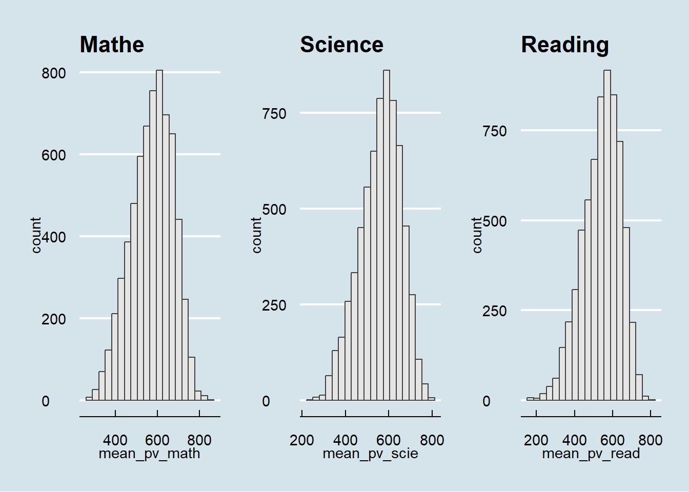

pacman::p_load(tidyverse, ggdist, ggplot2, ggthemes, gridExtra, ggrepel, patchwork, hrbrthemes, dplyr)Programme for International Student Assessment Education Survey (Singapore) : Exploratory Data Analysis
1.0 Project Overview
1.1 Project Brief
This project examines the educational landscape in Singapore, with a focus on disparities among students from diverse backgrounds. Despite international recognition for achieving excellence with minimal differences between children from affluent and disadvantaged families, public perception suggests the existence of disparities. The project aims to investigate disparities between elite and neighborhood schools, students from varying socioeconomic backgrounds, and families with different immigration statuses. Insights gained from this study will contribute to an informed discussion on educational equity in Singapore.
1.2 Project Objectives
The data used for this exercise was released on December 2022 from Programme for International Student Assessment(PISA). The organization survey every three years to observe the education systems worldwide through testing 15 year old students in the subjects of mathematics, reading, and science.
This for this exercise, will be using appropriate Exploratory Data Analysis (EDA)methods from R ggplot2 package to reveal:
Distribution of Singapore students’ performance in mathematics, reading, and science
Relationship between these performances with school, gender, and socioeconomic status of the students.
2.0 Getting Started (Preparation)
2.1 Install & load R packages
Installing necessary R packages that will be needed for this exercise. To load the requried packages the code chunk below use pacman::p_load() function is used to unsure that the packages are load to the current R work environment.
2.2 Importing PISA Data
For this exercise, we are only examining the Singapore students. So the data load in the below code chunk only contains
sg_stu <- readRDS("C:/lzc0313/ISSS608-VAA/In-class_Ex/In-class_ex1/data/stu_qqq_SG.rds")After examine the data using dim(),names(),summary() functions found that most of the variables from the survey is not needed for this exercise, to make it more convinient and efficient, we only extract the variables needed for this exercise as a new table for later use.
# Selecting specific columns from sg_stu
selected_columns <- sg_stu[, c("CNTSCHID", "ST004D01T", "CNTSTUID","ESCS")]
# Calculate the mean for each subject
mean_pv_math <- rowMeans(sg_stu[, c("PV1MATH", "PV2MATH", "PV3MATH", "PV4MATH", "PV5MATH",
"PV6MATH", "PV7MATH", "PV8MATH", "PV9MATH", "PV10MATH")], na.rm = TRUE)
mean_pv_read <- rowMeans(sg_stu[, c("PV1READ", "PV2READ", "PV3READ", "PV4READ", "PV5READ",
"PV6READ", "PV7READ", "PV8READ", "PV9READ", "PV10READ")], na.rm = TRUE)
mean_pv_scie <- rowMeans(sg_stu[, c("PV1SCIE", "PV2SCIE", "PV3SCIE", "PV4SCIE", "PV5SCIE",
"PV6SCIE", "PV7SCIE", "PV8SCIE", "PV9SCIE", "PV10SCIE")], na.rm = TRUE)
# Combine selected columns and new calculations into sg_stu_eda
sg_stu_eda <- cbind(selected_columns, mean_pv_math, mean_pv_read, mean_pv_scie)Total of 7 Variables are used
CNTSCHID, (Intl. School ID)
ST004D01T, (Students gender)
CNTSTUID, (Intl. Student ID)
ESCS, (Index of economic, social, and culture status)
mean_pv_math, (average of plausible value 1-10 of mathematics)
mean_pv_read, (average of plausible value 1-10 of reading)
mean_pv_scie, (average of plausible value 1-10 of science)
head(sg_stu_eda,10) CNTSCHID ST004D01T CNTSTUID ESCS mean_pv_math mean_pv_read mean_pv_scie
1 70200052 1 70200001 0.1836 605.2533 667.4296 639.7873
2 70200134 2 70200002 0.8261 689.9528 627.6078 672.0703
3 70200112 2 70200003 -1.0357 676.7768 582.9252 660.0384
4 70200004 2 70200004 -0.9606 401.0528 361.3969 343.6425
5 70200152 1 70200005 0.0856 436.1151 475.6763 479.2390
6 70200043 1 70200006 0.1268 518.1055 431.4652 476.0031
7 70200049 2 70200007 -0.0154 707.9552 704.2219 646.9278
8 70200107 2 70200008 1.1558 620.4136 524.4010 573.1763
9 70200012 1 70200009 1.4654 735.7920 713.1340 691.0124
10 70200061 2 70200010 0.5199 555.4636 504.6734 548.34343.0 Exploratory Data Analysis
3.1 Distribution Anaylsis
Before doing any further analysis, it is always good to look at the distribution of the data, so we can look at the distribution of the three subjects using histograms.

h1 <- ggplot(data=sg_stu_eda, aes(x = mean_pv_math)) +
geom_histogram(bins=20, color="grey25", fill="grey90") +
ggtitle("Math")
h2 <- ggplot(data=sg_stu_eda, aes(x = mean_pv_scie)) +
geom_histogram(bins=20, color="grey25", fill="grey90") +
ggtitle("Science ")
h3 <- ggplot(data=sg_stu_eda, aes(x = mean_pv_read)) +
geom_histogram(bins=20, color="grey25", fill="grey90") +
ggtitle("Reading")
patchwork <- h1 + h2 + h3
patchwork <- patchwork + plot_layout(ncol = 3)
patchwork & theme_economist()The analysis of Singapore students’ performance across mathematics, science, and reading reveals a notable strength in mathematics, evidenced by a maximum score of 842.72 that surpasses the top scores in science (801.9) and reading (797.59). The data indicates a wider range of abilities in reading, as seen by the lowest minimum score of 158.5626, compared to mathematics (262.564) and science (242.0194), suggesting that students excel in numerical and scientific reasoning.
3.2 Stacked Density Plot
Examining distributions individually might not provide a clear comparison; however, a stacked density plot could facilitate a more straightforward comparison across the subjects by overlaying their distributions.

ggplot(sg_stu_eda) +
geom_density(aes(x = mean_pv_math, fill = "Mathematics"), alpha = 0.5) +
geom_density(aes(x = mean_pv_read, fill = "Reading"), alpha = 0.5) +
geom_density(aes(x = mean_pv_scie, fill = "Science"), alpha = 0.5) +
ggtitle("Density Plot of Scores by Subject") +
xlab("Scores") +
ylab("Density") +
scale_fill_manual(values = c("Mathematics" = "red", "Reading" = "green", "Science" = "blue"))The density plot reinforces the findings from the distribution analysis, showing that Mathematics is a standout subject for Singapore students, with a distribution indicating not only higher peak scores but also a broader range of high achievers. The overlap between Science and Reading suggests similar performance levels in these subjects, with a less pronounced rightward extension than Mathematics, implying fewer high scorers. The shape and spread of the distributions indicate variability in student performance across all subjects, with Mathematics displaying a potential for both higher peaks and greater spread, hinting at a wider variance in achievement. These visual cues complement the earlier analysis, underscoring Mathematics as a strong suit in the Singapore education system while highlighting the need for continued focus on literacy to address the lower performance and greater variability observed in Reading.
3.3 School Impact on Singapore Student Subjects Score
It is also important to examine whether students in different schools exhibit variations in their performance across various subjects, as some schools may excel in teaching certain subjects compared to others. Since the school id has a very large sample, we are using a heatmap to display the significance.

sg_stu_eda_long <- sg_stu_eda %>%
pivot_longer(
cols = starts_with("mean_pv_"),
names_to = "subject",
values_to = "score"
) %>%
mutate(CNTSCHID = as.factor(CNTSCHID),
subject = factor(subject, levels = c("mean_pv_math", "mean_pv_read", "mean_pv_scie"),
labels = c("Mathematics", "Reading", "Science")))
ggplot(sg_stu_eda_long, aes(x = CNTSCHID, y = subject, fill = score)) +
geom_tile() +
scale_fill_gradient(low = "white", high = "blue") + # Adjust the color scale as needed
theme_minimal() +
labs(x = "School ID", y = "Subject",
title = "Heatmap of Subject Scores Across Schools")From the heatmap presented earlier, several noteworthy observations can be made. Firstly, it’s evident that students from certain schools consistently maintain similar scores across all three subjects. However, in other schools, there is a noticeable trend where science and mathematics scores are higher, while reading scores appear to be comparatively lower.
Furthermore, it’s interesting to note that schools achieving high scores in mathematics also tend to perform well in science, suggesting a potential correlation between these two subjects. Additionally, there are instances, albeit rare, where certain schools excel in reading, outperforming their scores in the other two subjects. These observations indicate the presence of distinct patterns and potentially valuable insights into the performance of students across different schools and subjects.
3.4 Gender Impact on Singapore Student Subjects Score
Next, we examine the gender impact on Singapore student’s different subject scores, as from what most people typically knows different gender perform differently in certain subjects, so it is important to check that if gender shows significance on the subjects score.

sg_stu_eda_long$ST004D01T <- factor(sg_stu_eda_long$ST004D01T, levels = c("1", "2"), labels = c("Female", "Male"))
ggplot(sg_stu_eda_long, aes(x = ST004D01T, y = score, fill = subject)) +
geom_boxplot(position = position_dodge(1)) +
stat_summary(fun = mean, geom = "point", shape = 20, size = 3, color = "darkred", position = position_dodge(1)) +
stat_summary(fun = mean, geom = "text", aes(label = round(..y.., 1)), vjust = 1.5, color="darkblue",position=position_dodge(1)) +
stat_summary(fun = median, geom = "line", size = 0.5, color = "darkblue", position = position_dodge(1)) +
theme_minimal() +
theme(axis.text.x = element_text(angle = 90, hjust = 1),
legend.position = "bottom") +
labs(x = "Gender", y = "Score",
title = "Boxplot of Subject Scores Across Gender",
fill = "Subjects")Mathematics: Males exhibit a higher average score compared to females, with the mean score for males being approximately 11 points higher. This suggests a notable performance advantage for males in mathematics within this sample.
Reading: Females outperform males by a substantial margin, with their average score being approximately 20 points higher. This considerable difference highlights a stronger performance in reading for females.
Science: Males again have a higher average score, with the difference being approximately 6 points. While this advantage is less pronounced than in mathematics, it still indicates better performance by males in science.
The interquartile range (IQR), which represents the middle 50% of scores, are different across genders for each subject. Males tend to have larger IQR across all subject compare to female, a larger IQR indicates more variability in student performance.The presence of outliers, as indicated by points beyond the whiskers of the boxplots, suggesting that there are students with scores that are unusually low or high compared to their peers.
Further analysis might be needed: Adding confidence intervals around the mean could provide insight into the statistical significance of the differences in means between genders.
3.5 Index of Economic, Social, Cultural Status Impact on Singapore Student Subjects Score
From the dataset, it is observe that the Index of Economic, Social, Cultural Status has differnt positive and negative values, and it seem that differnt values correspond with different range of subject scores. So, there might be relationship between this two variables, let use some EDA techniques to explore.
First, since the ESCS value as a wide range, we can use bin function ntile() to divide ESCS values into quantiles.
data_escs <- sg_stu_eda %>%
filter(!is.na(ESCS)) %>% # Remove rows with NA in ESCS
mutate(ESCS_bin = ntile(ESCS, 8)) # Bin ESCS into 8 bins
# Now, summarize to find the range of ESCS in each bin
bin_ranges <- data_escs %>%
group_by(ESCS_bin) %>%
summarise(
min_ESCS = min(ESCS, na.rm = TRUE),
max_ESCS = max(ESCS, na.rm = TRUE)
)
bin_ranges# A tibble: 8 × 3
ESCS_bin min_ESCS max_ESCS
<int> <dbl> <dbl>
1 1 -3.55 -0.788
2 2 -0.786 -0.233
3 3 -0.232 0.174
4 4 0.174 0.482
5 5 0.482 0.706
6 6 0.706 0.904
7 7 0.904 1.14
8 8 1.14 3.28 


ggplot(data_escs, aes(x = factor(ESCS_bin), y = mean_pv_math)) +
geom_boxplot() +
labs(x = 'ESCS Bin', y = 'Math Score') +
theme_bw()
ggplot(data_escs, aes(x = factor(ESCS_bin), y = mean_pv_scie)) +
geom_boxplot() +
labs(x = 'ESCS Bin', y = 'Science Score') +
theme_bw()
ggplot(data_escs, aes(x = factor(ESCS_bin), y = mean_pv_read)) +
geom_boxplot() +
labs(x = 'ESCS Bin', y = 'Reading Score') +
theme_bw()From the exploratory data analysis (EDA), it is evident that as the Index of Economic, Social, Cultural Status (ESCS) increases from bin 1 to bin 8, the scores in all three subjects exhibit a consistent upward trend. This observation holds true despite the presence of some outliers within each bin, which can affect the overall sample distribution. Furthermore, it is notable that the interquartile range (IQR) increases progressively as we move from lower ESCS bins to higher ones, indicating a widening spread of scores. This widening IQR suggests a greater degree of variability in scores among students as the ESCS index increases, reflecting the diversity in academic performance among students with different socio-economic backgrounds.
Conclusion
In summary, the comprehensive analysis of Singapore students’ performance across mathematics, science, and reading has provided several key insights:
Mathematics stands out as a strong subject for Singaporean students, boasting the highest maximum score and a broader range of high achievers. This strength suggests a focus on numerical and scientific reasoning skills.
Reading exhibits a wider range of abilities, with a lower minimum score, indicating a need for continued emphasis on literacy to address lower performance and greater variability.
The density plot reinforces these findings, highlighting mathematics as a standout subject with a higher peak and greater spread. In contrast, science and reading show similar performance levels but with fewer high scorers.
The heatmap analysis reveals that some schools consistently maintain similar scores across subjects, while others exhibit trends of higher science and mathematics scores with comparatively lower reading scores.
Gender-based analysis indicates that males tend to perform better in mathematics and science, while females excel in reading. These differences are reflected in the interquartile ranges, indicating greater variability in student performance among males.
The Index of Economic, Social, Cultural Status (ESCS) analysis shows a consistent upward trend in scores as ESCS increases, despite the presence of outliers within each bin. The widening interquartile range suggests increasing variability in student performance as the socio-economic status rises.
Further analysis, including confidence intervals, and other statistical testings such as correlation, ANOVA test may be beneficial to assess the statistical significance of these findings.